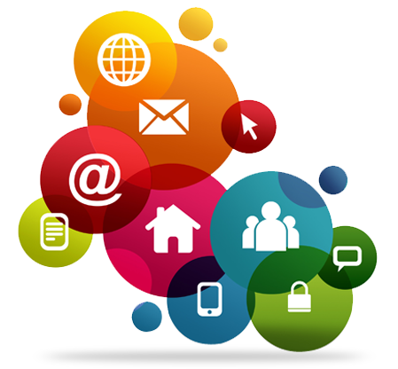

Services.
Web Development

Today the technology we are going to talk about. This technology is growing very fast and demand for it is also everywhere. Now it seems like it is necessary for everyone. Although it has become common now. But some people are still deprived of it. A website is a digital platform where we can keep all our information safe in one place. But in today’s Internet age, if you do not have an online identity.Then you might not know anyone. In such a situation, because of having a website, it works for you to create an online identity. You can create a brand of your own according to your own. And you can promote it through a website or blog.This means that if your business is not on the Internet, then your business is not business. Nowadays every company has its own website where it reaches all the information of its company to the customers. Whether your business is small or big, till the information of the product reaches the people, how will people know about your product Website is a simple people, how will people
know about your product Website is a simple and inexpensive way. That we should make any kind of information available to us. Nowadays the usage of websites everywhere has made things quite simple. As a business owner, having a Modern website is really critical. Like www.pixarcode.com, www. MCEI.in, and many of your web site names will be heard. Etc.for make website developer. language is used to create it like HTML, CSS, JS, PHP and SQL, MySQL, Oracle are used to protect its data. A website is made in several phases. If you want to stay ahead of your rivals. Or want to stand out from the crowd. So you should also make your own website a separate identity.
Digital Marketing

Today is the era of Digital. In this case, what is digital marketing? Don’t know, maybe you can be a little bit behind others. I am saying this because Because we have to keep pace with our changing era. Otherwise we will be left behind somewhere. And this is also applicable in business. Gone are the days when people used to go from house to house about their things.Such a strategy is impossible not to smile on today. Because it is a very waste of time. And it is almost impossible to reach so many people in such a short time. In such a situation, there is a very good solution for digital marketing. For marketing your products. With which companies can reach their targeted customers in a very short time. If we talk about the last few years, we will find that the appearance of advertisements has changed quite a bit. Earlier people used to run their advertisements in such a place. Where most people noticed, such as TV commercials, radio and all the methods were implemented. But this thing should not be effective
now because in today’s era, if you get the most crowd, then that is the place.Social Media or InternetIn such a situation, if you have to reach your advertisement to millions of people simultaneously. So you have to leave the old traditional marketing funds and move towards Digital Marketing.In today’s era, everything has gone online. The Internet has made our lives better and through this, we can enjoy many facilities only through phone or laptop.If we look at market stats, about 80% of shoppers do online research before buying any product or before taking service. In such a situation, digital marketing becomes important for any company or business. Today’s society is struggling with scarcity. That’s why digital marketing has become necessary. Every person is connected to the Internet. They can easily use it everywhere.
Search Engine Optimaization
Seo is a technique that brings our page to the top in search engines. We all know what a search engine is. Google is the most popular search engine in the whole world, apart from this, there are other search engines like Bing, Yahoo. So with the help of this, we can place our blog in the no 1 position on all search engines. For example, if we go to Google and search by typing any keyword, then Google shows us all the contents related to that keyword. The contents that we see all come from different blogs. The result we see at the top is at No 1 in Google, meaning that SEO has been used very well in that blog. Because of which more visitors come to it and that is why the blog becomes popular. SEO helps us to get the blog ranked No.1 in Google. This is a technique that increases the number of visitors to your website by placing it at the top of the search engine’s search results. If your website is at the top of the search results, then Internet users
will first visit your site itself, which increases the chances of getting more and more traffic in your site and your income also starts getting better. It is very important to use SEO to increase the organic traffic on your website. let’s now know why it is important for the blog. We use SEO to make our website accessible to people. Suppose I have created a website and published very good high-quality content in it, but if I did not use SEO, then my website will not reach the people and there will not be any benefit to build my website. If we do not use SEO, whenever a user searches a keyword, if there is any content related to that keyword in your website, the user will be able to access
Social Media Marketing

Have you ever heard about what is social media marketing? But you must have heard about Social Media. Because you use social media such as Facebook, Twitter, Instagram in your everyday life. Have you ever thought that marketing can also be done with the help of all these social media? Yes, friends can also do a lot of marketing with the use of all these. Marketing means that to tell people about your brand and to tell people these things, such places are needed where people always come to know, and in such a situation, there is hardly a better place for advertisers than social media. and meet. Nowadays social media marketing has become a very powerful way for any business. Because it is suitable for any business. Right now customers are already interacting with their favorite brands. So if you are not interacting with your audience on social platforms Facebook, Twitter, Instagram site Pinterest then you are missing a lot. If you use social media properly, then you too can achieve remarkable success in your business. And its,
brand value authority of things may increase Yes, friends, all of you can promote your blogs in the same way as other existing companies. With good engagement with your readers, you can increase the brand value of your blog. This is because Social Media is giving you this opportunity to interact more with your readers so that you can identify their needs Social Media Marketing is a form of Internet marketing where thousands of content like we create and share on social media only to achieve marketing and branding Goals of our own or any other company. This social media marketing includes many activities such as posting text and image updates, posting videos and similar content to engage the audience. It gives companies a way to know how you will engage with your new customers and old ones. As we know that from social media websites, marketers use many such strategies to promote their content. Many social networks allow users to provide their detailed geographical,
Google Adsens

If you are new in the world of the internet, then this question must also have come to your mind? Today we are going to tell you about this in detail. Which will make you understand better. People who have been working on the Internet for a long time. Google Adsense is not new to them. But many people do not know about it. But people who make a new website on the internet. Or you want to earn money by creating a new channel on Youtube. But earning money online is not a big deal. Everyone can earn money from the Internet. But for that, you have to be hardworking. They have not put internet and their income will be started by creating a blog or website. No one has got anything without hard work. No more will be available. You always have to be serious about your work. So it is very important to know about it. Because even if you create a website or YouTube channel. So all of them are incomplete without it. And there is hardly anyone who does not want to make
money from their website or from Youtube. So if you want to earn money from the internet, then you should also know about this network. Because this network will help you a lot in earning money from the internet. As the name suggests. That it is a Google product. One who works between the advertiser and the publisher (publisher). Google started it in 2003 by purchasing it from Applied Semantics Company. Since then, the network has emerged as the world’s largest advertising provider. When you visit any website. Then you will see ads displayed by Google on that website. When you click on these ads. So it gets money from Google Adsense. Google retains some part of it. While some part is given to the owner of the website This is the best thing about it. That it does not charge money to place ads on a website.
Email Marketing
Email marketing simply means marketing your products or services using email or through email. That is, to show him in the market email marketing is online/digital marketing. Email marketing is one such process. Through which we get information about our products and services through email. Email marketing is a form of digital marketing. Suppose you are a hosting company. And you have Emails address of many customers. You have to give your customers any new offers, new updates about hosting. Or there is some new feature added to your company. So you send a single email to many customers at once. This is called email marketing. So that you do not face much trouble, in a single click, all the customer gets to know about your updates. And you also get traffic through email. Similarly, online shopping company also does its marketing. Flipkart, snapdeal, amazon, eBay, etc .. Here it is, let’s talk about a hosting company, let’s take an example of the blogger. If you are a blogger. Suppose if there is a
blogger. Which has got many people's email addresses. If that blogger whenever he publishes a new blog post on his blog and sends his link via email to all those people, then a lot of traffic can come to his blog. You must have seen on many blogs that they encourage you to subscribe by filling in your email address. Skip the rest of the blogs, you can see on the Pixarcode that we have a box set separately on our blog. In which you can subscribe us by entering your email address. We do not do all this work ourselves, but the email marketing tool we are using. He himself works automatically. All these things are done by their system. This helps us bloggers a lot. And within a short time, the information of new posts reaches our visitors. Email marketing is also used for many different tasks. facebook, twitter, google plus etc.